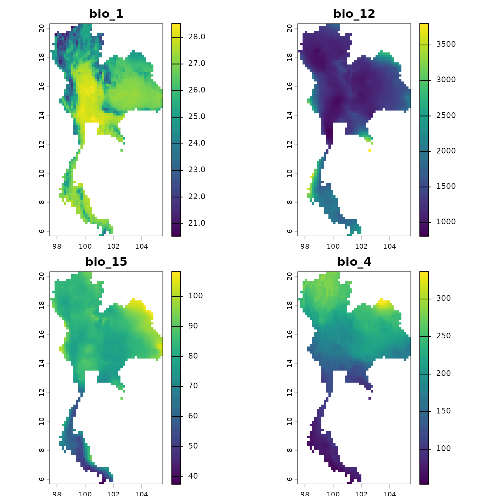
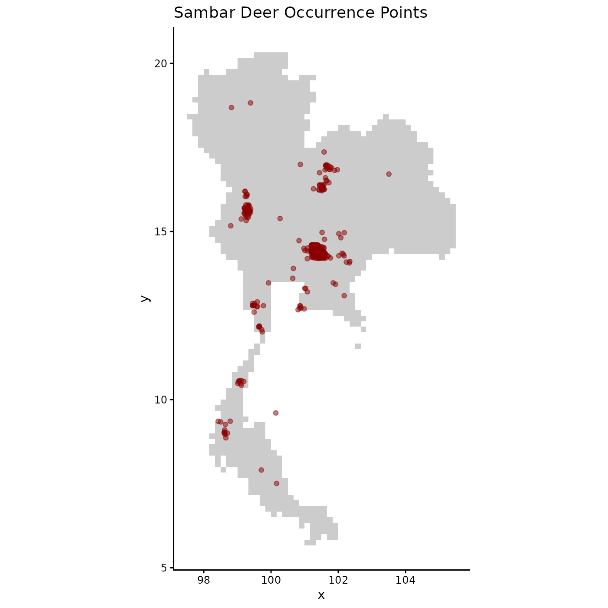
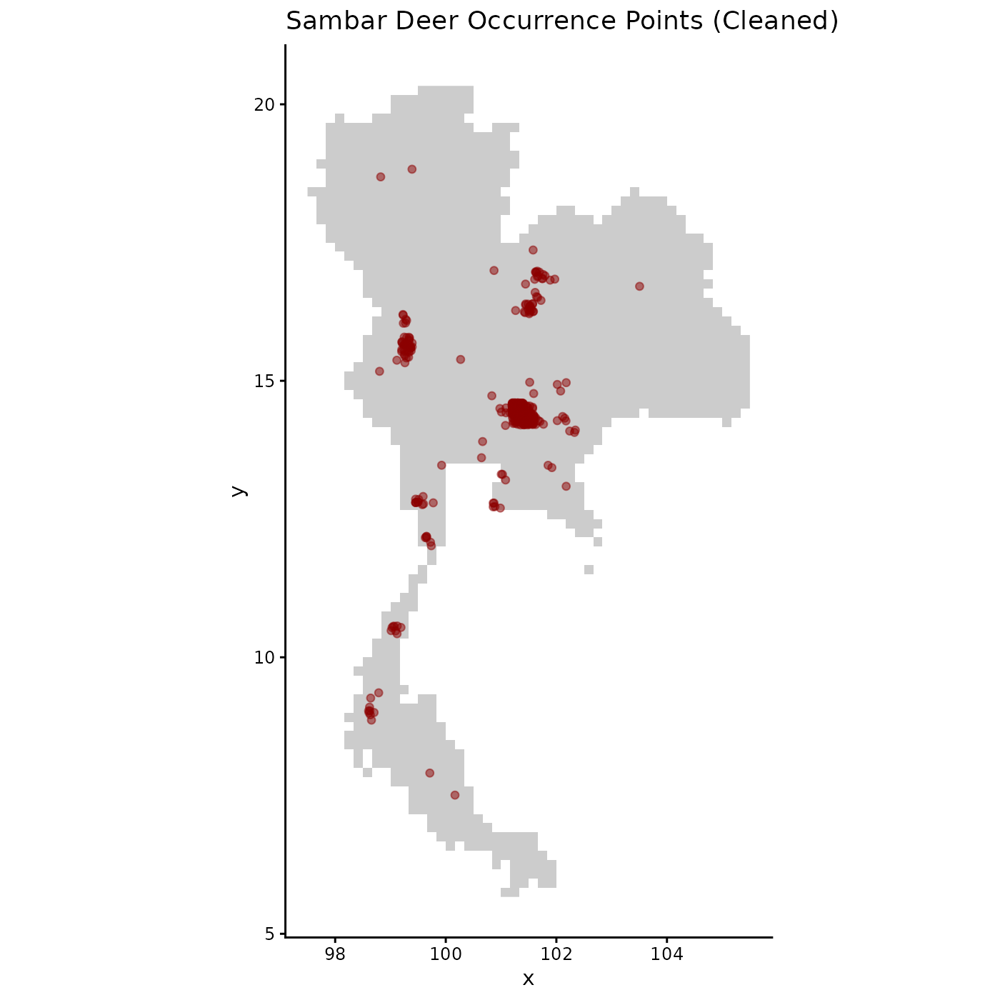

Load the package
library(bean)
#> Warning in rgl.init(initValue, onlyNULL): RGL: unable to open X11 display
#> Warning: 'rgl.init' failed, will use the null device.
#> See '?rgl.useNULL' for ways to avoid this warning.
library(terra)
#> terra 1.9.27
library(rgl)
library(ggplot2)Step 1: Import Data
The first step is to load your raw species occurrence data and environmental raster layers. It’s always a good practice to visualize the spatial distribution of your points and inspect the environmental layers.
# Load the raw occurrence data from the package
occ_file <- system.file("extdata", "Rusa_unicolor.csv", package = "bean")
occ_data_raw <- read.csv(occ_file)
# Display the first few rows to understand its structure
head(occ_data_raw)
#> species y x
#> 1 Rusa unicolor 15.37239 99.11555
#> 2 Rusa unicolor 15.41415 99.28763
#> 3 Rusa unicolor 14.46838 101.22005
#> 4 Rusa unicolor 15.65606 99.31600
#> 5 Rusa unicolor 14.39543 101.41694
#> 6 Rusa unicolor 12.72500 100.88947
# Load the environmental raster layers
thai_env_file <- system.file("extdata", "thai_env.tif", package = "bean")
env <- terra::rast(c(thai_env_file))
# Plot the environmental layers to check their extent and values
plot(env, mar = c(1, 1, 2, 4))
# Visualize the spatial distribution of the occurrence points
ggplot(occ_data_raw, aes(x = x, y = y)) +
geom_raster(data = as.data.frame(env[[1]], xy = TRUE), aes(x = x, y = y), fill = "gray80") +
geom_point(alpha = 0.5, color = "darkred") +
coord_fixed() +
labs(title = "Sambar Deer Occurrence Points") +
theme_classic()
Step 2: Prepare Data for Environmental Thinning
Before any analysis, the raw data must be cleaned and standardized.
The prepare_bean() function streamlines this process
by:
Removing records with missing coordinates.
Extracting environmental data for each point from the raster layers.
Removing records that fall outside the raster extent.
This ensures all subsequent functions work with a clean, complete, and scaled dataset.
# Run the preparation function to clean and scale the data
origin_dat_prepared <- prepare_bean(
data = occ_data_raw,
env_rasters = env,
longitude = "x",
latitude = "y",
transform = "none"
)
#> Skipping raster transformation.
#> Extracting environmental data for occurrence points...
#> 5 records removed because they fell outside the raster extent or had NA environmental values.
#> Data preparation complete. Returning 1024 clean records.
# View the structure and summary of the clean, scaled data
head(origin_dat_prepared)
#> species y x bio_1 bio_12 bio_15 bio_4
#> 1 Rusa unicolor 15.37239 99.11555 23.66463 1414 78.85445 175.0943
#> 2 Rusa unicolor 15.41415 99.28763 24.87193 1289 78.20957 180.2106
#> 3 Rusa unicolor 14.46838 101.22005 24.11074 1166 77.36796 173.1696
#> 4 Rusa unicolor 15.65606 99.31600 25.22871 1309 78.92366 186.1482
#> 5 Rusa unicolor 14.39543 101.41694 23.16356 1134 76.03447 182.5639
#> 6 Rusa unicolor 12.72500 100.88947 27.70646 1269 74.36774 123.1260
summary(origin_dat_prepared)
#> species y x bio_1
#> Length :1024 Min. : 7.508 Min. : 98.6 Min. :22.07
#> N.unique : 1 1st Qu.:14.414 1st Qu.:101.2 1st Qu.:23.16
#> N.blank : 0 Median :14.450 Median :101.3 Median :24.11
#> Min.nchar: 13 Mean :14.468 Mean :101.2 Mean :24.47
#> Max.nchar: 13 3rd Qu.:14.539 3rd Qu.:101.4 3rd Qu.:25.08
#> Max. :18.826 Max. :103.5 Max. :28.31
#> bio_12 bio_15 bio_4
#> Min. : 806 Min. :53.19 Min. : 69.86
#> 1st Qu.:1134 1st Qu.:76.03 1st Qu.:173.17
#> Median :1159 Median :77.37 Median :182.56
#> Mean :1191 Mean :76.98 Mean :179.68
#> 3rd Qu.:1176 3rd Qu.:77.57 3rd Qu.:188.16
#> Max. :2803 Max. :91.24 Max. :268.08
# Visualize the spatial distribution of the cleaned occurrence points
ggplot(origin_dat_prepared, aes(x = x, y = y)) +
geom_raster(data = as.data.frame(env[[1]], xy = TRUE), aes(x = x, y = y), fill = "gray80") +
geom_point(alpha = 0.5, color = "darkred") +
coord_fixed() +
labs(title = "Sambar Deer Occurrence Points (Cleaned)") +
theme_classic()